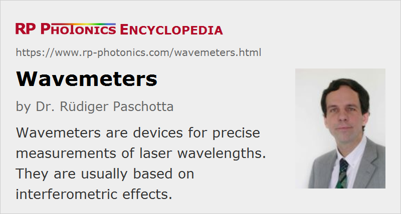

Wavemeters
Definition: devices for precise measurements of laser wavelengths
Alternative term: wavelength meters
More general term: optical metrology instruments
Categories: photonic devices, light detection and characterization, optical metrology
How to cite the article; suggest additional literature
Author: Dr. Rüdiger Paschotta
A wavemeter (or wavelength meter) is a kind of interferometer which is used for precise wavelength measurements on laser beams. There are different variants, including scanning wavemeters and static devices with no moving parts.
Scanning Michelson Interferometer
An often used type of wavemeter is based on a Michelson interferometer. Figure 1 shows the principle setup. Light from the optical source under test is sent into the Michelson interferometer, while the length of one of interferometer arms is scanned through a certain range. The period of the output power recorded by the photodetector with respect to the arm length changes then reflects the wavelength. The control of the measurement process and the data analysis are usually accomplished with a microprocessor device.
The principle of such a wavemeter can be extended for the measurement of the optical spectrum of non-monochromatic (= polychromatic) sources (→ spectrometers). Essentially, the spectrum is obtained by applying a Fourier transform to the detected power versus arm length difference. This method is called Fourier transform spectroscopy.
Various types of errors can affect the measurement accuracy:
- Length drifts (caused by temperature drifts, for example) and imperfections of the scanning mechanism can introduce substantial errors. Such errors can be largely removed by simultaneously recording the signal from a stabilized reference laser with known wavelength.
- Imperfections or changes of the beam profile can affect the results. Therefore, the input light is usually spatially filtered before its gets into the interferometer. Ideal filtering is achieved when the light is supplied through a single-mode fiber. For spatially multimode inputs, one may use a kind of mode cleaner, consisting of a pinhole between two lenses, for example.
- The accuracy of determining the oscillation period of the signal is limited by the width of the scanning range.
- For high-accuracy devices, various other effects can be relevant. For example, the results can be affected by fluctuations of the optical input power and by detector noise.
Depending on the quality of the device, the achieved wavelength accuracy can be 0.01 nm
Static Fizeau Interferometer
A Fizeau interferometer (Figure 2) uses two plane reflecting surfaces with a slight deviation from exact parallelity. For example, it can contain a glass wedge with a small angular mismatch of a few arcseconds, for example, where the front surface is partially reflecting and the back surface is fully reflecting. There are also implementations with discrete mirrors.
Effectively, two copies of the input beam are superimposed with a slight relative angle, leading to an interference pattern, the period of which depends on the wavelength. Usually, the input beam first gets through some spatial filter, and a collimated beam with large diameter is sent onto the Fizeau interferometer.
The shape of the interference pattern is measured with a CCD array, for example, and the data are processed using a microprocessor.
Aspects for Selecting a Wavemeter
Wavemeters of different types can differ in many respects:
- The accuracy varies between some fraction of a nanometer to far below 1 pm, and can depend on the wavelength. One should not confuse accuracy with resolution: a high accuracy requires not only a high resolution of the display, but also a high stability of the setup including the reference laser. Some devices have an autocalibration procedure. Rather frequent calibration (in extreme cases once per minute) may be necessary for highest accuracy.
- Some wavemeters have an internal reference laser, others use an external source.
- The measurement speed can be higher with static devices. These can also more easily be used for measuring the wavelength of pulsed inputs, but some scanning interferometer devices are also suitable for that purpose.
- The input light may be provided as a free-space laser beam or via a fiber-optic connection.
- Wavemeters work only in a limited wavelength range. Some types of wavemeters are better suited than others for extreme wavelength regions.
- Some wavemeters can display not only the wavelength but also the linewidth.
- Various display and software features can make the handling more convenient. For example, some wavemeters can display wavelength, wavenumber and optical frequency values.
Alternative Measurement Techniques
Other types of wavemeters can be based on Fabry–Pérot interferometers, for example.
The accuracy of wavelength measurements is affected by a number of factors such as wavefront distortions of the beam. A much higher precision can be achieved with optical frequency measurements (→ frequency metrology), which are immune to such effects.
Using a wavemeter is usually more precise than measuring a wavelength with a spectrometer. The advantage of a spectrometer, however, is that it also delivers information on relative powers of different spectral components. There are also wavemeters which can act as spectrometers, thus offering both functions with high accuracy.
Suppliers
The RP Photonics Buyer's Guide contains 21 suppliers for wavemeters. Among them:
Questions and Comments from Users
Here you can submit questions and comments. As far as they get accepted by the author, they will appear above this paragraph together with the author’s answer. The author will decide on acceptance based on certain criteria. Essentially, the issue must be of sufficiently broad interest.
Please do not enter personal data here; we would otherwise delete it soon. (See also our privacy declaration.) If you wish to receive personal feedback or consultancy from the author, please contact him e.g. via e-mail.
By submitting the information, you give your consent to the potential publication of your inputs on our website according to our rules. (If you later retract your consent, we will delete those inputs.) As your inputs are first reviewed by the author, they may be published with some delay.
Bibliography
| [1] | M. B. Morris et al., “Fizeau wavemeter for pulsed laser wavelength measurement”, Appl. Opt. 23 (21), 3862 (1984), doi:10.1364/AO.23.003862 |
| [2] | R. Castell et al., “The accuracy of laser wavelength meters”, Appl. Phys. B 38 (1), 1 (1985), doi:10.1007/BF00691763 |
| [3] | D. F. Gray et al., “Simple compact Fizeau wavemeter”, Appl. Opt. 25 (8), 1339 (1986), doi:10.1364/AO.25.001339 |
| [4] | C. Reiser and R. B. Lopert, “Laser wavemeter with solid Fizeau wedge interferometer”, Appl. Opt. 27 (17), 3656 (1988), doi:10.1364/AO.27.003656 |
| [5] | P. J. Fox et al., “A reliable, compact, and low-cost Michelson wavemeter for laser wavelength measurement”, Am. J. Phys. 67 (7), 624 (1999), doi:10.1119/1.19335 |
| [6] | J. J. Snyder and T. W. Hänsch, “Laser Wavemeters”, in Topics in Applied Physics: Dye Lasers (ed. F. P. Schäfer), Springer, Berlin (1973) |
See also: Michelson interferometers, spectrometers, frequency metrology, laser spectroscopy
and other articles in the categories photonic devices, light detection and characterization, optical metrology
|  |
If you like this page, please share the link with your friends and colleagues, e.g. via social media:
These sharing buttons are implemented in a privacy-friendly way!